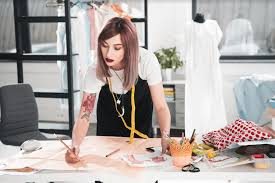

Mi sueño desde que estaba en 3ro de secundaria siempre fue ser Diseñadora de modas, hasta el día de hoy lo sigue siendo. Quiero ser una muy buena Diseñadora, Crear mis propios estilos. Me gusta mucho todo lo que tenga que ver con el Arte y lo que despierte mi creatividad, y eso es algo que me gustaría mucho cumplir, desde hace hace pocos años atrás yo me ponía a coser y estilizar mi ropa, diseñarla a mi modo, y me di cuenta que es algo que disfruto hacer, aunque sea un poco cansado, me han dicho que esa carrera si suele ser un poco pesada, pero es lo que yo Deseo ser y me gusta.
